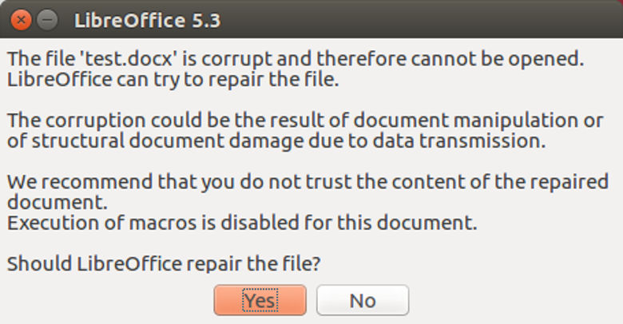
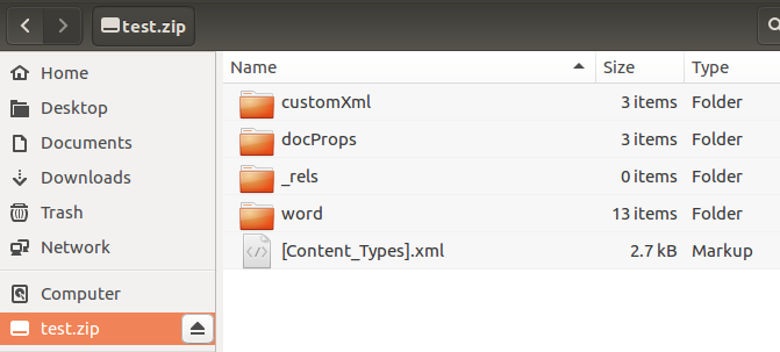
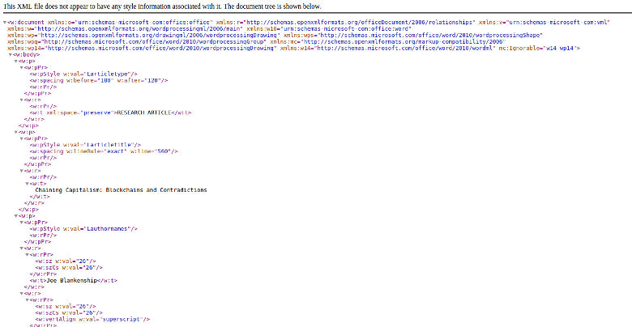

When you spend months working on a paper or literary project, the last thing you want is for your files to become corrupt or to somehow completely lose your data! I recently had a nerve-racking experience I thought I would share as the solution was not immediately apparent to me.
My setup is completely open-source. I was using Ubuntu 16.04 LTS with LibreOffice 5.3 in the process of modifying a Microsoft-formatted DOCX file. A week before this incident, I started to notice that saving the file was taking much longer than usual. The night before the file corruption, this noticeable time was doubled if not more so. I had been backing-up my files, but it was on a version-to-version basis and was not a persistent back-up (persistent back-ups being something which I HIGHLY recommend). This night, I had completed a great deal of the required revisions and was set to review this document the following day.
However, the following morning I sat in a cafe facing the below message on my screen.
 LibreOffice Error Message{kind=link}
I immediately went into crisis mode. Restarting the software and computer did not help and though I could open my backup, it did not have any of the previous night’s revisions I needed. After a few deep breaths, I went to the FAQs and Stack Overflow for some sort of solution.
I came across an article stating that if the automatic recovery for LibreOffice fails, a corrupted DOCX file (as a formatted Office Open XML file structure) can be saved as a ZIP file and then opened using an archive manager (this software will vary between operating systems, but the process will be the same). In Ubuntu 16.04, I am able to mount the ZIP file using Archive Mounter which opens it as another drive in your file browser.
 Opening the ZIP file{kind=link}
From here, we are going to look for a file named document.xml in the word directory. If you open it in the browser, you will see your document formatted in XML.
 Raw XML from DOCX{kind=link}
Even though it appeared that I successfully saved my document the night before, there was a good amount of work missing from this XML document. However, I only had to redo about a weeks worth of work (it should be said that it was not a simple feat).
Much of the document was reconstructed manually which led to some issues in the review process, but there are options to parse the XML into a new document. Using Python libraries zipfile and lxml, you can automate the above process with formatting into a new DOCX file (or file format of your choice).
Hopefully, this makes the recovery process for a seemingly catastrophic event easier to begin.
This work is licensed under a Creative Commons Attribution-NonCommercial-ShareAlike 4.0 International License.